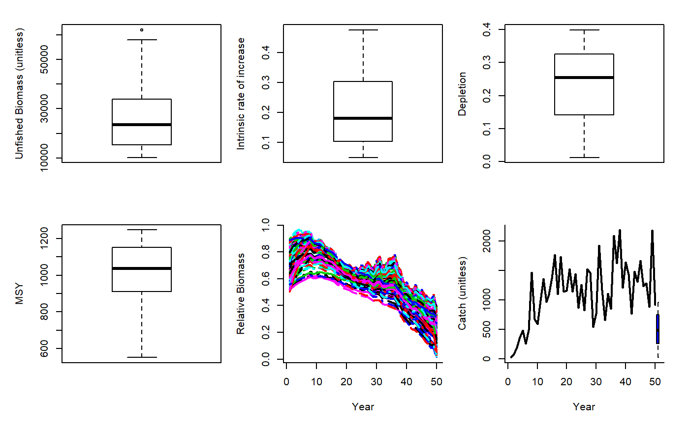

SPMSY.RdAn MP that uses Martell and Froese (2012) method for estimating MSY to determine the OFL. Since their approach estimates stock trajectories based on catches and a rule for intrinsic rate of increase it also returns depletion. Given their surplus production model predicts K, r and depletion it is straighforward to calculate the OFL based on the Schaefer productivity curve.
SPMSY(x, Data, reps = 100, plot = FALSE)
| x | A position in a data-limited methods data object |
|---|---|
| Data | A data-limited methods data object |
| reps | The number of stochastic samples of the MP recommendation(s) |
| plot | Logical. Show the plot? |
An object of class Rec with the TAC slot populated with a numeric vector of length reps
The TAC is calculated as: $$\textrm{TAC} = D K \frac{r}{2}$$ where \(D\) is depletion, \(K\) is unfished biomass, and \(r\) is intrinsic rate of increasase, all estimated internally by the method based on trends in the catch data and life-history information.
Requires the assumption that catch is proportional to abundance, and a catch time-series from the beginning of exploitation.
Occasionally the rule that limits r and K ranges does not allow r-K pairs to be found that lead to the depletion inferred by the catch trajectories. In this case this method widens the search.
See Data for information on the Data object
SPMSY: Cat, L50, MaxAge, vbK, vbLinf, vbt0
See Online Documentation for correctly rendered equations
Martell, S. and Froese, R. 2012. A simple method for estimating MSY from catch and resilience. Fish and Fisheries. DOI: 10.1111/j.1467-2979.2012.00485.x
#> TAC (median) #> 478.5829